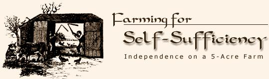
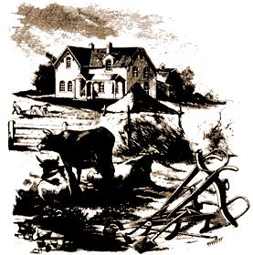
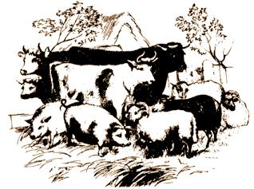

Farming For Self-Sufficiency
John and Sally Seymour's record of 18 successful years on a shirttail-sized homestead in England should offer welcome encouragement to today's back-to-the-landers... both real and imaginary. Here's the first article from the Seymour's book on Self-Sufficiency.
By the Mother Earth News editors
January/February 1974
Ah, the vicissitudes of time. Two years ago, when there were NO currently relevant small-scale-farming introductory handbooks available, many of us welcomed the publication of Richard Langer's Grow It! with open arms. Now that we're all older and more experienced, however, some folks find it increasingly easy to criticize that breakthrough beginner's guide (see the Feedback sections of this and the last two MOTHERS).
Which brings us to another breakthrough book that is just as important (probably more so) now as Grow It! was two years ago...and which may well come up for its share of criticism in another 24 months or so.
Be that as it may, John and Sally Seymour's record of 18 successful years on a shirttail-sized homestead in England is important now and should offer welcome encouragement to today's back-to-the-landers . . . both real and imaginary. I'll be serializing the book in my next few issues and I'm sure that many readers will want a personal copy for their home libraries.-MOTHER.
Two to three hundred years ago the British came to our shores-their new land-seeking survival and adventure, security and liberty. Many found these goals. Land was cleared, rich farms established, ores dug, factories built, steel smelted. Smokestacks pierced the sky, and cities grew. Wealth poured forth endlessly, and a strong nation developed. Most people called it health, success, and Progress with a capital "P."
But underneath were disconcerting signs. Slums and ghettos in urban centers, rising taxes and costs which troubled farmers. Their answer? Sell more wheat, corn cotton; get more land, plant more acres, buy larger machines, use more fertilizers. There came an onslaught of blight and borers, weevils and fungi. Pesticides and poisons to the rescue!
Always there were more people to feed in cities, so more chemicals were put In the soil for higher yields. Yet there was more disease, so stronger pesticides were used. Eventually came the sad admission that the soil was changing-growing stiff, inert, sick. Later came the sadder conclusion that the depletion and erosion and disease were resulting from the chemical-pesticide regime and the commercial, mono-crop agriculture, sometimes called agri-business.
Now in 1973, into our midst come two British farmers, John and Sally Seymour, with their book Farming for self-sufficiency. Do they speak to our condition? Does Britain, that crowded Isle which boasts one of the largest cities in the world, have something to say to us about farming?
The answer is a decided Yes! The Seymours help us rethink our agricultural-even our whole cultural-approach by reporting the ways and results of a score of years producing and living in an organic, self-sustaining pattern. This is the way of life which, in the 1920s, Ralph Borsodi had christened "modern homesteading. "
Of course, the Seymours' thesis is not new to a growing sector of American farmers and gardeners-not after Louis Bromfield, Edward H. Faulkner, Rachel Carson, Ruth Stout, J.I. and Robert Rodale, along with Ralph Borsodi and many others, have experimented with and written about the decentralist, organic, on-to-the-land movement.
The Seymour record represents a distillation of the wisdom of all these writers and many others. Any devotee of the best in what some Americans now call the organic "green revolution" will see that the Seymours have read, digested, experimented with, and often improved upon earlier organicists. And the reader gets all this, not in a scholarly, stilted way, but as in a friendly, honest chat with neighbors. Picture John Seymour in dungarees, hat pushed back, at ease In some spot during chores, perhaps with one foot atop a fence rail, telling you about the day's experience-or last week's or last year's.
Certainly Farming for Self-Sufficiency comes out of the Seymours' experience, out of long years of the experience of unusually intelligent, honest and healthy human beings, who not only understand but love and enjoy their life-style. Here is a couple-a family-who farm for the fun of it! For the health, the diversity, and the sheer interest and satisfaction of it.
John lived and worked on farms as a boy. But this fact and his and his wife's eighteen years of homesteading do not make John and Sally just country people in any provincial sense. They are cultured people-college-educated, well-read, authors of many articles and several books. They have had plenty of professional and city experience. John was in World War II and later had a government job in A frica. But they are really more urbane than urban, with their true natures manifest in their life on the land. Their farming and their living are sound and authentic, honest, humorous, and human.
My background and experience is-as may be that of many a reader-somewhat parallel to theirs, a circumstance which only adds to my delight in and welcome to the book.
Long ago I put in my appearance on a Nebraska farm and was part of an early parental migration to a small town "where the children could have it better than we did. " In high school and college, I was "educated" away from a rural heritage to a profession in religious education and social work. Some years in authoritarian schools and in the salve of teaching handicrafts and (of all things) ballet to children of unemployed families during the Great Depression turned me to seeking better answers. I found Technics and Civilization by Lewis Mumford and This Ugly Civilization By Ralph Borsodi. To me these works contained strange doctrines for that time-critiques of modem industrialism, and in Borsodi's case, of modem farming. By 1939 Ralph Borsodi's School of Living, organized to deal with the response of his readers, had already been formed. To it I went forth with. There I found and experienced a new philosophy and practice of living-the normal, human, creative pattern of self-maintaining family homesteading.
Then I was married, fortunately to an Ohio homesteader. From 1940 until his death in 1968, John Loomis and I developed Lane's End Homestead into a fully productive, family homestead. There on our four seven-acre fields, eight of woods, and two of orchard and garden, we had our cow, a few sheep, chickens, bees, a pig or two, and a beautiful team of Belgians. We raised all our meat, milk, butter, cheese, and eggs; all our grains and feed; ground our flour and baked our bread; produced all our vegetables and most of our fruit. All we bought was coffee and salt, and occasionally, citrus fruit. What a delight, then, to follow the Seymours through their near score of chapters, most entitled (characteristically) by single words: "Land," "Horse," "Cow," "Dairy," "Pig," "Bacon," "Meat," "Grass," "Fish," etc. Especially moving are their first and last chapters, where their titles grew to two- and three-word phrases: "What Is It? Why Do It?" and "Last Word. " Here is all the fun, challenge, and creativity we had at Lane's End, unrolled for re-experiencing and relearning or for learning anew. One thing is sure, on a homestead learning is never finished.
Like the Seymours, we got involved In telling others about it. Possibly the ego needs this, but it all seems so important and significant and too good to keep In. In the early 1940s Dr. Borsodi suggested that he and Lane's Enders issue a monthly journal to "Interpret current events from the decentralist point of view " It immediately intrigued us. In 1943 we began The Interpreter, whose function was to report our experience, exchange information with others, and espouse what we began to label the "green revolution."
Centered in Ohio, we were close to and naturally friends with Louis Bromfield and his famous organic Malabar Farm at Mansfield, Ohio. This brought us in touch with the American Friends of the Land group initiated by Bromfield, and in turn with the British Soil Association and its founder, Lady Eve Balfour. Eventually we received a visit from that gracious lady, who introduced us in 1950 to Sally and John Seymour in Wales, with whom we immediately became pen pals.
Through the years we have compared notes, read and exchanged each others' writings-the Seymours on The Bloom in Wales, the Loomises at Lane's End and The School of Living In Ohio. We've produced and lived from our production, we've written and traveled In the interest of organic living, we've failed and succeeded, we've laughed and loved and learned.
Now there Is an American edition of Farming for Self-Sufficiency. In Britain it is selling "like hot cakes. " It joins a swelling list of how-to-live-on-the-land treatises here, to supply all those who see doom in urban decay; who want surcease from devitalized, preserved, and processed food; who have fled to the suburbs and find life there too simple and routine; who know that education is living if it be in a resourceful, productive setting, and that such living is itself education.
John and Sally Seymour take us through any project they describe from start to finish, elaborating each step of the way. Their chief mentor is William Cobbett, whose Cottage Economy (1833) is to England what Thoreau's Walden is to America.
Suppose you want to know how much land you should have-how much of your family's food you can grow on one acre, five acres, or twenty acres? The Seymours give facts and experiences of all kinds, but conclude, "If a family controls an acre of good land for every member of that family, that is very well indeed. "
If you are concerned about the nature and content of soil, the Seymours take you through the fascinating intricacies of potash, phosphate, and nitrogen. Humus? You 'll itch to make a compost heap after they explain it! Horses? Prepare for a practical guide through handling, harnessing, shoeing, and feeding a horse. There is also a homely probing into the use of machines and why they have decided to use a secondhand tractor (as we did on Lane's End, as we grew older). Of plowing, says John, "I don't believe there Is a more entrancing occupation." You 'll never want to live without it.
As for cows, calves, and such, you will see yourself putting on rubber gloves and turning the young animal In the uterus for calving. But then, If you've followed instructions and properly fed and cared for the mother, she will be so healthy, that one evening she will have her calf by herself In some Isolated spot. In the morning you 'll find the calf eagerly nursing, and the cow licking her baby's tail.
You will read about milk-that marvelous, almost perfect food, except for iron. And cheese, a frugal but nutritive way to store summer surplus for winter use.
You'll become a friend of the pig-a very Intelligent and cooperative animal that helps plow your rough acres and rewards you with good bacon and (John maintains) delicious fat. (It isn't fat, but lack of exercise, that causes thrombosis!) For curing bacon or salting fish, look for no better guides than the Seymours. The same may be said for making wine (of parsnips no less) or beer or baking bread, or the details of raising poultry-chickens, ducks, geese, turkeys, pigeons-of all breeds, with an account of their excellences and mediocrities. The same for sheep, goats, and rabbits.
You have surmised that the Seymours are not vegetarians-though they give the vegetarian argument a fair handling. They conclude, however, that a homesteader must live with nature; that soil cannot retain its tilth without animal waste; that nature produces animals (especially males) in surplus and that man (an animal himself) has been entrusted with the sensitive and ethical care and killing of animals for his survival needs.
Neither are the Seymours ascetics or aesthetes, eschewing good food and eating. They relish food of quality. You know they respect and treasure food because of the effort and skill they have put into producing it. For them it is both source and result of their own life and energy. They enjoy everything from delectable strawberry jam or a fresh apple to tripe (animal intestines), which, properly prepared as they do It, is "too good for any king."
John Seymour is no less practiced and knowledgeable on field crops-wheat, rye, maize (corn to us), and especially barley. He's also tops on garden crops-greens, beans, peas, cole (tomatoes, etc.), brassica (the cabbage family), as well as roots, turnips, beets, mangolds, carrots, potatoes. He's just as prolific and informative when he discusses fruits and nuts-and the varieties, growth, storage and preservation of one and all. Being an islander, he of course is at home with all kinds of food from the water-fresh and salt.
Is this, then, the perfect book for the self-sufficient on-to-the-lander? Well, almost. Some readers may have a bit of difficulty with some terms common to British speech, like "lurcher" (a dog) "sprat" (a fish), "fluke" (an insect that infests animal livers), "potting" (ceramics), mead (a fermented-honey wine), rape (a turnip-like plant), etc. But their meaning is quickly explained or clear from the context. Such words do not interrupt the ebb of good-humored information and flow of easy philosophical probing. Farming for Self-Sufficiency is a book to read for the fun of it-as all honest, human experience should be, especially when It conveys interaction with Mother Nature and the brand of Common Sense that the Seymours have developed. Farming for Self-Sufficiency is also a book to prop up on the table and refer to while you're dressing a fowl, fermenting wine, or planting a garden. Just think what it will look like after you've butchered a beef or two! Spattered and dog-eared. Better buy two-one for the library shelf and one for the workbench!
Where can problems of living better be dealt with than on a self-sustaining homestead? After many years of living on one, and many more of thinking about the problems in the world, I can't escape the conclusion that if a determining majority of people were to live the Seymour life-style, most of our manmade problems would be reduced to manageable proportions. There are two obvious obstacles to such a majority living that way in the world as we know it today: first, a lot of people don't want to live that way. In spite of the "revival" of interest in the direction of normal, creative living on the land, many are afraid or simply don't prefer it. The Seymours' account will help them change their minds and gain confidence to follow in that path, Second, the price and cost of land is a hurdle that many who do want a new way of life cannot readily surmount. The Seymours are aware of this and encounter it head-on on their first page:
There is one man in each village, though, or very often not in the village but of the village, who does absolutely no good at all, and who is a terrible burden on his fellow villagers. That is the ... land-owner. He probably consumes more of the wealth of the village than all of the other villagers put together, and in return for this he does absolutely nothing at all. Remove the [absentee land-owner] and at one stroke you more than double the wealth and well-being of every other villager.
In a letter today, John Seymour writes,
Land, I believe, is the key to all things, and until we wrest land from the hand of the big landlord and make it available to the people who can use it, we can get nowhere. America's Henry George was a great prophet. Borsodi and The School of Living are in this tradition.
Long life to American homesteaders and thanks to the British Seymours!
MILDRED LOOMIS
The School of Living
Freeland, Maryland
June 1973
WHAT IS IT? WHY DO IT?
How many a poor immortal soul have I met well-nigh crushed and smothered under its load...
THOREAU
What does being self-supporting mean? Robinson Crusoe, if we except his raft-loads, got pretty near it, and many an African tribesman, or Indian ryot, is not far away. I have lived in African and Indian villages, and have seen a very high degree of self-sufficiency in both, and also a very high degree of happiness and true contentment. In every North Indian village of any use there is a man who knows how to go out into the country and cut down a pipal tree, and with it make a plough to sell to his neighbor in return for wheat or rice or other goods or services. There is a village miller, a dhobi or washerman, a tonga - wallah or driver of a hackney-cart, carpenter and blacksmith, potter, and the people spin their own cotton to give the yarn to the village weaver to weave their cloth. If a man wants to build a house he and his neighbors get to work and build it and that is that. Except at harvest nobody works very hard.
There is one man in each village, though, or very often not in the village but of the village, who does absolutely no good at all, and who is a terrible burden on his fellow villagers, and that is the zamindar -the land-owner. He probably consumes more of the wealth of the village than all of the other villagers put together, and in return for this he does absolutely nothing at all. Remove the zamindar and at one stroke you more than double the wealth and well-being of every other villager.
The Central African village has no zamindar, in fact it has no landowners at all. The concept of land-ownership is completely alien to the African tribesman. The village owns, or at least controls, such of the surrounding forest as it can hold from others, and the villagers till the land in common, each man tilling what seems to the Headman of the village a reasonable amount, and paying nobody any rent for it. The Headman tills (or at least his wives do) the same amount as anybody else, and everybody has enough, and could have more if he wanted it. Here, unless there is a famine (and in twelve years in Africa I never saw one), everybody gets enough to eat, and people who do not hanker after the flesh-pots of the white man live a very good life indeed.
Teach these people to read, though, and you immediately get a completely different situation. The children grow up no longer content with village self-sufficiency. They must have books, and books cannot be produced in the village (although I have seen paper being made in an Indian village in a mill; the chief constituent was a cow walking round in a circle providing the power), they wish to see the other parts of the world that they now become aware exist, they long for the sophisticated clothes, the machines, the gadgets and the other things that can only be produced by a city-based civilization. The Indians have two useful words: pukha and kutcha. Pukha means with a civilized finish on it. Kutcha means rough-made in the village without outside help. The man who has learnt to read, and been to town, comes back and wants a pukha house-one that makes use of glass and cement and mill-sawn timber and other materials that cannot be produced in the village: his old kutcha house is no longer good enough for him. He also wants white sugar instead of gorr, which is the unrefined sugar of his own sugar-cane, tea instead of buttermilk, white flour instead of his own wholemeal. He-and eventually his whole village with him-are forced into a money economy, crops are grown for sale and not for use, the village becomes part of the great world-wide system of trade, finance and interchange. In Africa what happens is that the young men of the village are forced to go and work in the white man's mines.
Now, the sort of self-sufficiency which I wish to treat of in this book is not the old, pre-industrial self-sufficiency: that of the illiterate peasant or hunter who has never heard of anything else. That kind of self-sufficiency is, for better or for worse, on the way out. What I am interested in is post-industrial self-sufficiency: that of the person who has gone through the big-city-industrial way of life and who has advanced beyond it and wants to go on to something better.
If the findings of the National Academy of Sciences and the National Research Council of the United States are correct (see their report Resources and Man -W.H. Freeman and Co., San Francisco), we will be forced into this kind of self-sufficiency whether we like it or not. For, according to these findings the fossil fuel supply of the earth will be exhausted long before we can possibly develop atomic or solar power to take the place of more than a tiny fraction of the motive power that our big-city civilization requires to make it work, and there are, apparently, insuperable obstacles to the really widespread global development of atomic power. After all, the existing electricity-producing power stations of the earth, no matter how they are driven, could not power a tiny fraction of the road, sea and air transport of the world, and if the latter ground to even a partial halt the whole great fragile edifice of global interdependence would collapse.
If this does not happen though, and if-as most people are in the habit of thinking-'they' find a way to keep a hundred million motor cars roaring along the roads after the oil has dried up (whoever 'they' are), there is still a case for far more self-sufficiency of communities and individuals. If there is fast and cheap land transport it is not necessary for a jeweler to live in Birmingham, a potter in Stoke-on-Trent or a cutler in Sheffield. Such craftsmen can live, if they wish, right out in the country, and practice their crafts in their own homes. Their raw materials can be got to them cheaply, and cheaply they can send their finished articles away. With unlimited cheap transport the whole need for crowding people into industrial cities fades away, and more and more city people will leave the big cities (which will become more and more unendurable anyway as more and more ignorant people try to crowd into them) and set up their workshops in pleasant places, and many of these people will eventually get the idea of being at least partially self-supporting.
There is no good economic reason why they should be self-supporting: a craftsman living in the country need not even grow a cabbage if he doesn't want to-he can simply produce enough of the produce of his own industry to buy the food he needs. But a surprising number of such craftsmen find that they want to be at least partially self-supporting. A surprising number of the more intelligent people who have passed through the big-city-industrial stage are reacting against it: they want to advance to a more interesting and self-sufficient kind of life. After all, specialization may be economic, but it is terribly boring. I am a writer, but if I wrote enough hours a day to buy everything I and my family need I would write myself into the ground. I would quickly become bored and unhealthy. As it is, I write for half my working day, and during the rest of my time work mostly out of doors, growing and producing much that we eat and use, thus keeping happy and fit. Economics is a great science, but it falls down flat on its face when it tries to equate all good with money. It is inefficient, any agricultural economist will tell you, for me to hand-milk a cow. But what if I like hand-milking a cow? What is the economist going to say about that? Has any economist ever tried to measure the 'efficiency' of playing golf? And what if a couple of gallons of milk a day derive from my activity of hand-milking a cow? Does that make it in any way less 'efficient' than if I spent the time playing golf? When economists try to measure things like that they quickly get themselves in to very deep water.
So more and more people, in all the highly industrial societies, are trying partially to opt out of the big-industry set-up and become less specialized and more self-sufficient. These people are not anachronistic, or ignorant or stupid, but are in fact drawn from the most intelligent and self-aware part of the population. The list of 'intentional communities' in the United States of America is long and getting longer with an increasing momentum. In this country there are several hundred such communities, and the army of 'hippies' and 'drop-outs' wandering about the roads like the pilgrims of old contains many individuals who would like to be self-supporting, but haven't the faintest idea how to set about it.
For the last eighteen years Sally and I have been probably as nearly self-supporting with food as any family in north-west Europe. We have a very good idea of what it is like and what it involves, and therefore, I feel qualified here to utter a solemn warning.
It is beyond the capabilities of any couple, comfortably, to try to do what we have attempted. If a married couple settled down on five or ten acres of good land, in the British climate, and devoted their entire time to being self-supporting in food, clothes and artifacts; and if they knew how to do it, and had the necessary stock and equipment, already paid for, they could succeed. They would be working just the fifteen hours a day, three hundred and sixty-five days of the year, that is, if they were to maintain the standard of living, and variety of food and of living, that they could maintain in a town. They would be very healthy doing this, they would not be bored (because they would never be doing the same job for long and would be doing a great variety of tasks), but they might sometimes wish they could sit down.
Thoreau, when he lived at Walden and wrote his famous book about it, lived almost exclusively on beans, and he didn't work very hard at all. He spent a very large part of his time there wandering around in the woods, peering into the depths of his pool, thinking and dreaming and meditating. I think he was a very sensible and enviable young man indeed. But he didn't have a wife and a family to bring up. Personally, I would not be prepared to live for two years and two months (which is the time Thoreau spent at Walden) on beans. Sally certainly wouldn't either, and we would be very hard put to make the children do it. We have, in fact, lived for eighteen years on the fat of the land: we have probably eaten and' drunk better than most other people in this country: our food has been good, varied, fresh, and of the very best quality. We have never been self-supporting-but we have been very nearly self-supporting. We have lived extremely well on a very small money income, and the tax-eaters have not done very well out of us. We have not contributed much to the development of the atom bomb, nor to the building of Concorde. When the latter breaks the sound barrier over our heads, and scares the wits out of our cows, we have to endure it, but at least we have the satisfaction of knowing that we haven't paid for it.
We started our life of partial self-sufficiency with no stock no land, no tools, and no money at all. Therefore, we have always had to work at money-bringing jobs, Sally at potting and myself at writing; and we have had to do the self-supporting work in our spare time. We have both had to work harder than people should have to work. But supposing there had been a small handful of other effective 'drop-outs' in the vicinity? Supposing, instead of having to keep both cows and pigs, we had only to keep cows? And swapped milk for bacon? Whenever we have been near another 'self-supporter' we have immediately found our task lightened considerably. We could share tools and equipment, 'know-how' (I apologize for borrowing a word from the culture that I have opted out of), and partially specialize: for example, trade asparagus for globe artichokes, mutton for salt fish pottery for wooden vessels.
This, you may say, is the beginning of specialization, and the beginning of the road back to Birmingham. I do not think it need be. I believe that if half a dozen families were to decide to be partially self-supporting, and settle within a few miles of each other, and knew what they were doing, they could make for themselves a very good life. Each family would have some trade or profession or craft, the product of which they would trade with the rest of the world. Each family would grow, rear or produce a variety of goods or objects which they would use themselves and also trade with the other families for their goods. Nobody would get bored doing their specialized art or craft, because they would not have to spend all day at it, but there would be a large variety of other jobs to do every day too. This partial specialization would set them free for at least some leisure: probably more than the city wage-slave gets, after he has commuted to and from his factory or office. A more organized community than this-such as the Americans call an intentional community, or the Israelis a kibbutz-might work even better. There is room for endless experiment. The New England village community of the eighteenth century, if you forget the witch-hunting, must have been a very good place to live in.
I can imagine, one day in the future, a highly sophisticated society, some of the members of which would live in towns of a humane size, others scattered about in a well-cared-for countryside, all interdependent and yet in some ways very independent, the towns contributing to the country-the country to the towns. This would not be a very mechanized or industrialized society, but a society in which the real arts of civilization are carried on at a high level, in which literature, music, drama, the visual arts, and the crafts that lead to the good life, are all practiced and appreciated by all the people. This would not be 'going back', whatever that means. It would, if you like to think in terms of such imaginary progressions, be 'going forward', and into a golden age. Periclean Athens wasn't such a bad place, give or take a few slaves. If we could find a way to achieve the same result without slaves, we would have achieved something very worth while.
LAND
To live well to enjoy all things that make life pleasant, is the right of every man who constantly uses his strength judiciously and lawfully.
WILLIAM COBBETT
Give any man, anywhere in the world, his fair share of the earth's surface, and-if he survives one harvest-he and his family need never be hungry again.
There are 860 people per square mile in England. There are 640 acres in a square mile, so this makes something like two-thirds of an acre for every man, woman, child and baby. But Eire has only 105 people per square mile, and Wales and Scotland are pretty under-populated too so the figures are not as bad as they seem, and the British Isles is one of the most highly populated places in the world. I traveled in a train over a thousand miles in southern Africa, from De Aar to Outjo in Namibia, and hardly saw any human dwellings at all, and yet nearly all of the country over which I passed was potentially very fertile. The Israelis would make it blossom like the rose. According to last year's June the Fifth Returns there is about half an acre of farm land per human soul in England and Wales, plus of course some rough grazing, mountain grazing and woodland, and, again, England is one of the most populated countries in the world.
Cobbett says you can keep a cow alive and productive on half an acre by feeding her on Swedish turnips and cabbages. Plenty of commercial farmers nowadays are keeping a cow on half an acre plus a considerable amount of brought in fertilizer and food. Personally I should want to see at least two acres per cow if I was buying nothing in from outside: no hay, no dairy cake or corn, and no fertilizers. There would be plenty of room on those two acres for other things as well as the cow though: you can run a sheep with every cow without starving the cow and the products of the cow could help substantially towards feeding a pig which need take up hardly any land at all. Sally and I reared our family of four children for eight years on five acres of very poor land, and the only things we had to buy in any quantity in the food line at least were wheatmeal for bread, sugar, tea, coffee and certain spices: there was lighting of course (in our case paraffin) and anthracite for the Aga. We cut most of our fuel, though, from the surrounding forest. It is true that we bought some foodstuffs from outside for our animals, but it is also true that we exported a lot of animal products: our exports of calves, weaner pigs, fat chickens, ducks and geese more than paid for our imports of feeding stuffs.
I would say, then, from my own experience, that a family with four children could live very well on five acres of good land, buying very little from outside, but only if they managed their affairs very carefully. Of course, if they lived like Thoreau did, on beans, or like Punjabi peasants do, mostly on wheat, they would have no trouble at all and would have a surplus for sale. Without any artificial fertilizers you should grow a ton of wheat on an acre, and it takes a child a long while to eat his way through a ton. But I am thinking of a rich, full and varied diet.
Balance is all important in this, and to achieve this balance is very difficult. It would make the problem immeasurably easier if there were even one or two other families, within easy walking distance, doing the same sort of thing. For example, if a family keeps a cow she will not give them milk all the year round because she will be dry for part of the year. So the family must keep two cows. The two cows will then be in milk for most of the year together and the family will have far more milk than it needs. If there was another self-supporting family nearby though, either one family could keep two cows and keep both families in milk, or each family could keep one cow and supply the other family when their cow was dry. Again, if you kill a pig or a sheep, and have not got a deep freeze, you cannot eat all the meat unsalted before it goes bad. If you share this meat between two families you can, at least in the winter-time. If there were four families you could eat all the meat in the summer-time too, at least in the case of a sheep or a small porker. There are all sorts of ways round this, of course: you can turn milk into cheese and pork into bacon; but for the rich full and varied diet, without an excessive amount of labor, a little specialization helps enormously. If you wish to mechanize, and grow your own hay and your own wheat, you will need either to own or to hire both a binder and a grass mower. If you have a neighbor, he can grow the hay for both of you and you can grow the wheat. You each need half as much machinery. The road back to Birmingham? There is a lot of difference between growing only hay and not wheat, and putting on Nut No. 365872 a thousand times a day on some machine. There is specialization and specialization.
The answer to the question of how much produce you can grow or rear on a given piece of land varies enormously. A countryman, or a good gardener, will grow a great amount on a small area of land while a beginner, or somebody who does not have enough time to devote to the job, will grow practically nothing worth while at all. I have a half-acre plot at this very moment which I planted with brassica (plants of the cabbage family) in the spring, and it was well cultivated, manured and fertile. It is now nothing but a mass of weeds and rubbish, and the slugs and pigeons have destroyed what little there was of the brassica plants which had survived the weeds. This was because I was forced, by circumstances, to spend most of my summer away and was just not able to keep down the weeds. Cobbett says: 'you ought to depend more on the spade and the hoe than on the dung heap'. Suffolk men say: 'A good hoeing is worth a shower of rain.' Bad land will yield a fair crop if that crop is kept constantly hoed and weed-free: the best land in the world will yield nothing if it is not. It is far better to have a small acreage of land and really 'do' it well, than have a large acreage and scratch over it. It takes very little land to grow the vegetables for a family, if that little land is 'farmed' to the utmost.
So it is very hard to say what is the minimum amount of land needed for a family which wishes to be either wholly or partially self-supporting in food. Do the children want to keep ponies? Will they keep a horse or two for ploughing, or will they use machines? Or will they confine themselves to the spade? If they have machines they will not be self-supporting, because they will use oil. But if they use machines they will have more time to devote to their cash-getting craft or profession, and will be able to pay for the oil and for the machines. Maybe, though, they don't approve of machines. Maybe they think it is immoral to use machines that have to be made by unhappy people in huge factories which they themselves would not consider working in even for one moment. Maybe they don't care. I've got a tractor myself-and I wouldn't spend one minute of my life working in a tractor factory. But I've got horses, and horse implements also, and know very well how to use them.
But if a family controls an acre of good land for every member of that family, that is very well indeed. If the family has access to a little common grazing, or can collect wood in a forest or woods held in common, or catch fish in the sea, or derive wealth in fact from outside the borders of its holding, so much the better. If the family holds more land than that, then that family ought to be exporting a surplus of food for feeding townspeople, who cannot grow any food at all.
Now comes the question of what to grow and what animals to rear and fatten and otherwise exploit on the holding. Nothing is more boring for the farmer or worse for the farm than monoculture, or only growing one crop. Most of the commercially farmed arable land of England now is devoted to monoculture, barley being the crop. The same crop can be grown year after year on the same land by the addition of larger and larger amounts of artificial fertilizers, and larger and larger amounts of pesticides, fungicides and chemical weed killers. As the years go by the one crop always takes just the same elements out of the soil, and the pests, fungi, bacteria and weeds that like to infest that particular crop become more and more strongly established and the farmer has to call in the chemist more and more to combat them and farming becomes hydroponics and not true husbandry at all. The modern agribusinessman is dealing with an inert sterile soil, rendered lifeless and barren by monoculture and inorganic chemicals, but made to grow crops-and large crops too-by the addition in an inorganic form of the chemicals that the crop needs. Whether this process can continue for ever nobody yet knows: certainly it has already continued long enough for many people to have made large fortunes out of it, and for large urban populations to have been fed. It is not true farming at all because the soil itself is contributing nothing to the growth of the crop except holding it up: all that the crop needs is coming from the phosphate and potash mines of various parts of the world, and the giant factories that extract nitrogen out of the air. When the fossil fuel of the earth is exhausted this process will stop of course, and men will have to get back to real farming.
But we are not considering this kind of farming at all, for we are not concerned with growing cash crops on a large scale to sell to the urban masses, but with producing subsistence crops of high quality to eat ourselves or perhaps trade with our immediate neighbors. Therefore variety is what we must strive for. Firstly, because growing a variety of crops, and keeping a variety of animals, is more fun. (That is the most important thing of all.) Secondly, because it is better for the soil: each crop takes something different out of it, the pests and diseases of each crop die of starvation the next year when another crop occupies that piece of ground, the plants feed the animals and the animals feed the plants, for the two kingdoms to which these creatures belong are completely complementary.
At the Broom, which is the name of the five-acre holding on which Sally and I spent our first eight years of trying to be self-supporting, we never brought in any fertilizers of any kind at all, and yet as the years went by we found our land growing better and better crops. We used no sprays, hardly any, if any, insecticides, fungicides or herbicides (I do remember once or twice squirting some stuff over the apple trees, but I don't believe it did any good) and yet we never seemed to suffer any trouble from pests or diseases. The reasons were-that we had a great deal of animal manure, we never grew the same crop twice running on the same bit of ground, and we grew such a large variety of crops that no single pest or disease could ever get any sort of a hold at all.
Another advantage of growing and keeping a multiplicity of crops and animals is that in this way you can spread your labor load right round the year. The agri-businessman has a huge investment in sophisticated machinery to enable him to cope with his one huge crop all at the same time, and that with practically no labor at all. There is a man in Cambridgeshire who farms ten thousand acres, growing nothing but barley, With the help of three men. I have seen his land-it is a desolation and an affliction to -the soul, but it grows an awful lot of barley. (Not a very high yield per acre but an enormous yield per man.) But if you are working by hand you cannot deal happily with large amounts of any one crop. By diversifying you always have something to do but never too much. Your harvests, and planting times, and all the other work-load peaks, come at different times.
And now we come, inevitably, to the great question of animals or no animals. Are we to be vegetarians or not vegetarians?
The world can support a certain number of vegetarians, but for reasons that I shall now set forth I don't believe it can support a population which is all, or nearly all, of this persuasion. The non-vegan vegetarian I think we can discount, that is if he is a vegetarian on moral or ethical grounds alone. If he just doesn't eat meat because he doesn't like it that is his own business entirely: after all plenty of people don't like boiled turnip and nobody else worries about it. But the man who takes a high moral attitude about not eating meat, and eats eggs, drinks milk or eats butter and cheese, wears shoe leather or wool, just does not have to be taken seriously at all. A cow won't give milk unless she has a calf every year, and every other calf she has, on average, is going to be a bull. What do you do with the bull? Let it starve to death or feed it until it dies of old age? If you do the latter your five acres soon aren't going to be supporting anything else except bulls-and it won't support them for long. We have only to go to the parts of Hindu India where they really don't kill cattle, and have no export outlet for them, to see what happens there. The children starve while walking hat-racks wander about picking up any bit of stick they can eat and eventually provide the vultures with poor pickings indeed.
You can't hatch eggs to provide yourself with hens to lay more without hatching out as many cocks as hens. What do you do with the cocks? If you keep sheep to shear your sheep will breed, unless you are very careful-or would you allow castration, vegetarian?
As for the vegan (a vegan will eat no milk or eggs besides, of course, no meat), a vegan world cannot really suffer any large animals to live at all. If I become a vegan what would I do with the two sows I have got in my sty now? Do I feed them until they die of old age-not letting them breed of course? Or do I turn them loose to roam the roads and get what living they can? If I do that somebody's crops are going to suffer-if enough people do it there won't be any crops left at all. Man has a part to play in the balance of nature, and if he fails to play it that balance gets off-balance and nobody benefits at all. The only possible way in which, in a vegan country, we could suffer large mammals to share the same country as ourselves and go on flourishing would be to import large predators to control them. If we just let loose all the cattle, sheep and pigs that we have now, what does any vegan think would happen? What is the alternative to letting them loose? Well, kill them all, or castrate all but one or two of the males and let all but a few zoo specimens die out. I have never heard any answer to any of the above arguments and I am quite sure I never will, because there are no answers. As for the non-vegetarian whom the self-supporter is bound very often to meet who, with his legs under your table, a knife and fork in his hand, and tucking away happily into his share of a shoulder of mutton, says: 'Ugh! How on earth can you bring yourself to kill a poor sheep!'-well, the only answer to him is to take his plate away.
The good husbandman is not the tyrant of his piece of land, but should be the benign controller-and part of the biosphere himself He is an animal, and the fellow of his sheep and his pigs-and of his grass and his cabbages too: hasn't it now been proved that all life on earth derived from one cell? Take a five-acre piece of wilderness, or a five-acre stretch of a barley prairie, and there is really very little life on it at all-very little of the higher forms of life at least. Give that five acres to a true husbandman, to live and rear his family on, and you will soon find it supporting a very rich flora and fauna. The application of the intelligence that only man has is beneficial to the other life forms, but for this man must be free to harvest and control, not only among the plants, but among the animals too.
So while I would never try to persuade any vegetarian to become a carnivore I would never become a vegetarian myself. The vegetarian cannot share his holding with other large mammals. I don't think I have the right to be so exclusive.
Once you accept animals, then the greater variety of them that you have on your land the better. Each species draws something different from the soil, and puts something different back. The parasites that afflict one animal die when ingested by another. If you have nothing but, say, sheep, you will get a build-up of sheep-infesting worms on your land. If you have cows too, and alternate the two species on the various parts of the farm, the cows will ingest the eggs of the sheep parasites and these will die, and vice versa, and the animals of both species will be the healthier for it. Any vet will tell you this, and any commercial farmer who has any sense. Also, the cows will eat the coarse grass that the sheep won't touch, and the sheep, which crop much closer, will come behind the cows and crop the very short grass that the cows can't get. A cow grazes by curling her tongue around the grass; the sheep (like the horse) nips it off with her teeth very close to the ground. Thus put your calves first into a clean piece of pasture, follow them with your adult cattle, and follow these with your sheep and horses.
Geese, too, are an important grazing animal and, except for that merry fortnight when they are being fattened for the table, they can live on nothing but grass. They fit very well into your ecology. Ducks are one of the few animals that will eat that revolting thing-the slug-and therefore are very useful for patrolling your land to keep these down. You can let them wander in your garden, within reason, and although they will nibble the lettuces they will also eat the slugs and the latter would do far more damage. And, after all, you can eat the ducks can't you?
Hens will thrive in woodland, or any rough ground if it is not too wet (if it is wet then what are your ducks and geese for?). If moved across pasture they do great good to it, scrapping out the matted grass, eating thistle seeds and other weed seeds and manuring it. Put on stubble after a corn harvest, they save from waste the spilled grain and also scrap out wireworm and other monsters. Run behind larger animals, they help by spreading their droppings, and help themselves (and you) by eating any undigested grain.
The pig is a noble and magnificent animal. He will eat not only the food that grows on the top of the soil but will mine deep down and munch up the roots of docks and nettles, wire worm and leather jackets, and derive only the pig knows what health and benefit from what lies underneath. He is your best ploughman. On light land I have seen a pig completely bury herself-a huge sow with only her tail sticking up above the level of the ground. Keep pigs on a small area of rough useless ground, until they have dug it over and over and manured it again and again, and that land will have been turned into an easily-worked and fertile part of your holding. A small area per pig though-let Old Mother Common Sense say how big. But don't keep pigs there too long. Like other animals, they will eventually build up parasitic infestation if left too long on the same piece of land, but we will discuss all that in Chapter 6.
As far as crops are concerned, if you have plenty of animals, and use the plough or the spade and the hoe enough, you will have no difficulty growing the finest crops in the world and you won't have to spend a penny on fertilizer. There is a benign cycle-vegetable-animal-vegetable and so on ad infinitum-that will progressively increase, and not decrease, the health and fertility of your holding. I personally have nothing intrinsically against artificial fertilizers. I don't believe myself that you can really taste the difference between a cabbage that has had a pinch of sulphate of ammonia shoved on it and one that has not. If my land lacks phosphate I put some slag on it, if I can afford it, and find it very good stuff. But I have to admit I don't like paying for slag-or any other 'artificials'. I am mean. And if by good husbandry I can keep my land fertile enough not to need to import 'artificials', that I would far rather do. And I believe that the richer the micro-flora and micro-fauna you have in your soil the healthier the plants and large animals that live off the soil will be; 'artificials' suppress the micro-flora and micro-fauna, while 'organic manure' (droppings of animals plus rotten vegetation) encourages it.
Rotate your crop by all means: never grow crop after crop of the same species year after year on the same land. Of course with perennials, like fruit bushes or trees, asparagus or globe artichokes, you can't rotate, but consider-all those things need great quantities of muck or compost. You practically renew their soil every year by the addition of manure. But annual crops should never be grown twice on the same land. Rotate your crops and rotate your animals above the crops and neither will suffer from any disease.
As for the initial fertility of your land, I would advise anyone taking over a holding to have the soil tested by a man from the Ministry of Agriculture, and if he says it lacks lime -lime it, phosphate-slag it, or potash-potash it. If the land is in very poor heart (as it certainly will be if your predecessor has been an agri-businessman) then you may have to use some nitrogen for a year or two, until your animals have made you enough fertility to put the heart back into the soil. If you insist on farming with no animals then you will always have to buy nitrogen, even if you make vegetable compost, and if you make the latter you will have to get vegetable matter from outside because there just won't be enough on it to make enough compost to increase fertility. A man can't really hoist himself up by his own boot-laces, nor can a farm.
Another question we must consider before we leave the subject of the land is drainage. Much land is dry and selfdraining, and if it is we don't have to worry about this aspect at all. But if land grows sedges, rushes, heavy tussocks of grass, or mare's tail, then it will probably want draining, and won't be any good until it is drained. Wet land cannot support aerobic micro-organisms, therefore old vegetation cannot rot down properly into it (it turns into peat instead); few crop plants will thrive in it and it is almost impossible to cultivate. It will grow poor, coarse grass for grazing sometimes, and this may be welcome in a dry season, but whether you grow grass on it or arable crops, it will be far more productive if it is drained. And a factor against grazing wet marshlands is the almost certain danger from liver fluke. Both sheep and cattle will suffer from this, and man will himself too-if he eats, for example, watercress from flukey land. There is no excuse, really, for any husbandman to have ill-drained land on his holding unless he is keeping it for a nature reserve. Some marshes, indeed, ought to be preserved for this, for marshy flora and fauna can be very interesting, and have as much right to exist as we do.
But if you have wet land, and wish to drain it, in Britain you had better send for the drainage officer of the Ministry of Agriculture, Fisheries and Food. For not only does that gentleman know a lot about drainage, but also he can hand out certain very useful subsidies: the government will pay half the cost of drainage schemes at the moment, and at times this subsidy has gone up as high as 75 per cent.
If you wish to do it yourself, though, and on small holdings it is better sometimes to keep the government men as far away as possible, and in other countries but Britain there may not be a subsidy anyway, there are certain principles that must be borne in mind.
The first is (and this the non-farming layman often finds very hard to understand) that a ditch dug along the contour of sloping land drains the land below it and not that above it. The layman says 'How can this be? The water in the land won't run uphill-how can It get into the ditch to drain the land?' The answer is that the contour ditch above the wet field stops more water running into the field. The water already in the field is going to work its way downhill anyway, and by the time it had got to a contour ditch dug at the bottom of the field it would have been on the point of leaving the field anyway. The rain that falls on a field is not enough to make it boggy: it is the water working its way underground from higher land that does this, and it is this water that is intercepted by the contour drain.
Open ditches drain very efficiently, but they must be fenced against cattle or the latter will break their sides down, and they must be cleaned out from time to time, which is a laborious process. It can be done by hand, or else by tractors fitted with power-arms, such as the McConnell. Underground drains may not drain quite so freely but they require no maintenance: cattle cannot break them down and you don't have to clean them out. They may not live for ever though. There are two sorts: piped drains and mole drains. Mole drains are merely opened in the soil by a mole drainer pulled behind a tractor: the moler looks like a little torpedo stuck on the bottom of a steel blade. There are plenty of contractors who do this work. Mole drains stand up well in clay soil, less well in lighter soils, and if there are too many big stones or boulders underground you can't make them at all. In good cases they last about eight years.
Piped drains are the other sort of underground drain. A narrow ditch is dug, either by hand or by machine, and a pipe is laid in the bottom of it. Formerly the pipe was fired earthenware, in lengths of from a foot to eighteen inches: now it tends to be of long lengths of plastic. The plastic has holes in it to let the water in , the earthenware pipes let the water in where they join. In either case loose stone or gravel is poured in on top of the pipe and then earth filled in on top. Piped drains may last a very long time. I dug a ditch in heavy land in Suffolk and thus revealed the carefully-bricked outlet of a piped drain with a date on it: 1880. When we cleared the mouth of the drain, water immediately began to run out of it and it was working perfectly.
You can also drain by digging a ditch and putting bushes in it and burying them (the Romans did this) and I have experimented by putting down brushwood and then laying halfsheets of rusty corrugated iron on top of it and filling in the soil. What happens when the iron rusts right away I don't yet know. You can split the sheets easily with an ordinary mattock-standing over them and cutting them down the middle. It is a very good way of getting rid of unsightly old pieces of corrugated iron.
But whatever sort of underground drains you use they have got to come out somewhere, and that will probably have to be in a ditch. The ditch will have to be either running down the slope at one side of the field, or else running along the contour at the bottom of the field. You can often drain a field by simply digging a ditch along the top contour, as I have said, but if the field is very large, or very wet, you will need underground drains too. On sandy or gravelly soil, or soil with a porous subsoil, such as sand, gravel, limestone or chalk, you won't need any drainage at all and you can heave a sigh of relief.
|
 |
 |
 |
|
 |
|
|